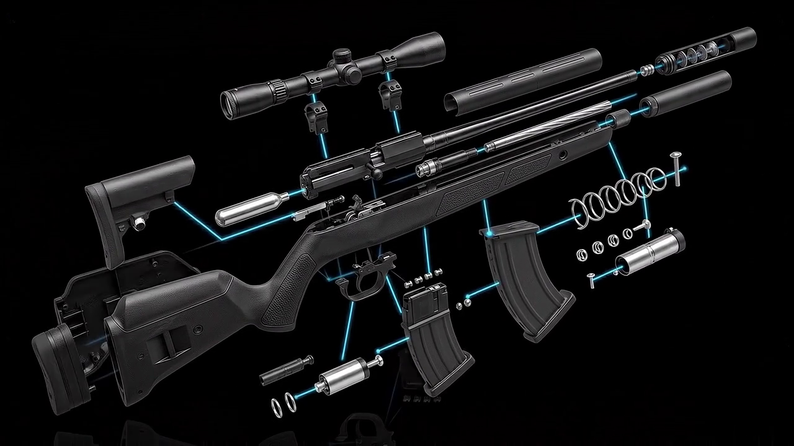
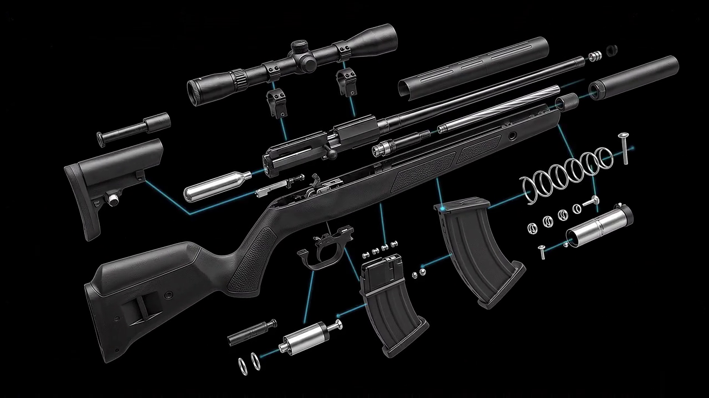

A Digital Engineering
Visualization Experiment
This project explores the intersection of precision mechanical engineering and modern web technology. Starting from a photorealistic 3D render sequence, we translate a complex mechanical assembly — from its unified, assembled state — through a full exploded engineering visualization.
Every scroll pixel is mapped to an animation frame, creating a direct, tactile connection between the user and the machinery. The result is an experience that feels physical — as though you are physically pulling the mechanism apart with your hands.
Subsurface scattering, micro-surface roughness, and HDR lighting simulation
Frame-perfect synchronization between scroll position and animation state
Hardware-accelerated compositing for buttery 60fps performance
The Engineering
Behind the Experience
Four layers of technical architecture work in concert to produce seamless, performant scroll animation.
Frame Extraction
240 sequential PNG frames exported from a 3D render at consistent camera angle, lighting, and composition. Each frame is 1920×1080px, losslessly composited against a transparent background.
Scroll Animation Logic
GSAP ScrollTrigger pins the hero section for the full scroll duration. The scroll progress (0–1) maps linearly to the frame index. scrub: true ties scroll velocity directly to playback rate.
Canvas Rendering
Each frame is drawn onto an HTML5 <canvas> element using drawImage(). The canvas is sized to the viewport with object-fit: contain logic, preserving aspect ratio without layout shifts.
Performance Optimization
First 20 frames preload immediately on page load. Remaining frames lazy-load in the background using Image() objects. An IntersectionObserver defers offscreen section assets.
Preloading Strategy
Critical frames (1–20) are preloaded synchronously before the scroll listener activates. A loading overlay masks the canvas until >80% of frames are decoded, eliminating blank frame flashes.
Frame Index Math
Progress ratio p ∈ [0,1] maps to frame index via Math.round(p × (totalFrames - 1)). Clamped to valid range. Only redraws when the target frame differs from current, avoiding redundant GPU work.
Lighting Realism
& PBR Materials
Each component features physically-based rendering materials — tuned roughness, metallic reflectance, and area-light rigs for studio-quality output.

Frame 230 — Full component separation with ambient occlusion contact shadows
Frame 001 — High-gloss metallic surface treatment
Frame 060 — Soft rim lighting reveals component geometry
Frame 120 — Internal structures become visible

Frame 180 — Fine mechanical details at maximum clarity
How Scroll
Drives Every Frame
The animation system creates a direct, lossless mapping between scroll distance and frame index. There is no easing, no artificial timing — just pure mechanical correspondence between user input and visual output.
Pinning the Hero
ScrollTrigger pins #hero-sticky for 4000px of virtual scroll distance. The viewport appears frozen while the user scrolls.
Progress Mapping
As the user scrolls through the pinned section, GSAP emits a progress value from 0.0 to 1.0 with scrub: true.
Frame Index Calculation
frameIndex = Math.round(progress × (totalFrames − 1))
Clamped to [0, 239]. Only triggers redraw when index changes.
Canvas Draw Call
Target frame — if loaded — is drawn via ctx.drawImage(). Canvas is sized to maintain aspect ratio. Background cleared before each draw.
Text Fade Sequence
Hero text opacity and transform are animated based on scroll progress. Badge and title fade in early, CTA fades in at 15% progress.
const totalFrames = 240;
let currentFrame = 0;
ScrollTrigger.create({
trigger: '#hero-wrapper',
start: 'top top',
end: 'bottom bottom',
scrub: true,
pin: '#hero-sticky',
onUpdate: (self) => {
const idx = Math.round(
self.progress * (totalFrames - 1)
);
if (idx !== currentFrame) {
currentFrame = idx;
drawFrame(idx);
}
}
});Built for
Lighthouse 90+
Every optimization decision targets both perceived and measured performance.
Optimization Techniques
Canvas compositing bypasses CSS paint layers, enabling direct GPU texture uploads
img.decode() called before drawing to prevent main-thread decode spikes
Dirty-flag pattern skips drawImage() when target frame hasn't changed
IntersectionObserver defers section images until 200px from viewport
Frames 21–240 load in background batches of 10 without blocking UI thread
Canvas promoted to its own compositor layer, preventing repaint cascade